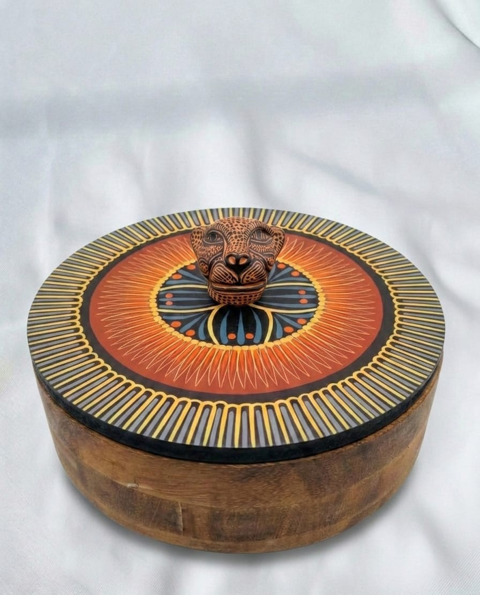
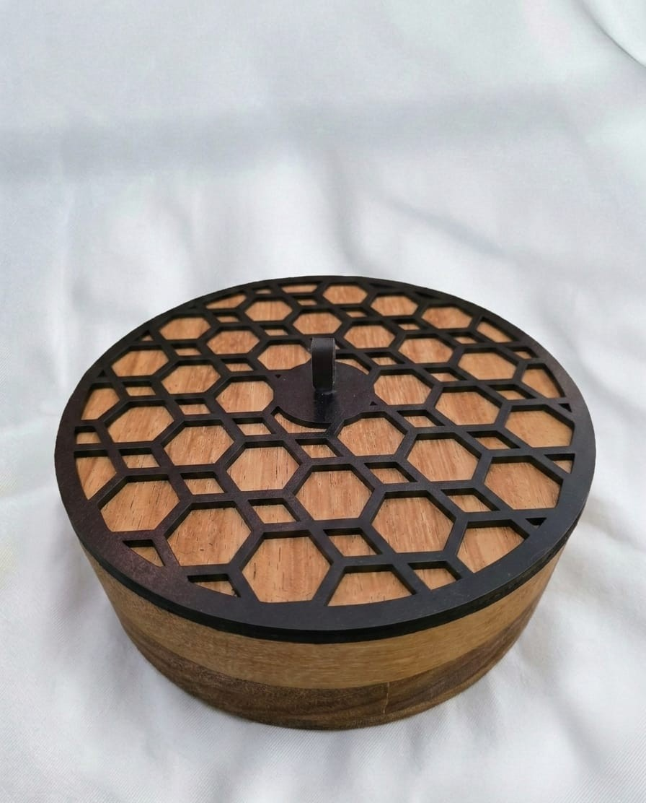

Hecho con pasión

Colección Olinalá
Colección Panal rinde homenaje a la legendaria técnica de laqueado de Guerrero, México. Cada pieza es una obra maestra de paciencia y detalle, elaborada en madera de lináloe, sobre la cual se aplicará una pasta hecha de la mezcla de aceite de Chia y un pigmento mineral llamado Tecostle. Para que con una espina de Huizache o pluma de gallina se detallen todos los dibujos que llevan nuestras tapas de tortillero. Cada diseño presentado en esta colección es único . A través de la colección Olinalá encontrarás artesanías que no solo decoran espacios, sino que preservan siglos de historia mexicana. y cultura ancestral.

Colección Martina

Colección Jaguar
Evocando la selva y la cultura chiapaneca, representando el símbolo de la fuerza y la conexión espiritual la "Mujer del Jaguar", en Amatenango del Valle, sobre los Altos Chiapanecos, Juana Gómez nos presenta sus jaguares, alfarera desde hace muchos años, pues sobre el barro blanco se traduce el imaginario Jaguar moldeado a mano, para después trazar con pincel y pintura formas simétricas en todos los jaguares, conectando tradición, cultura y naturaleza, colección Jaguar.

Colección Panal
Nuestra Colección Olinalá rinde homenaje a la legendaria técnica de laqueado de Guerrero, México. Cada pieza es una obra maestra de paciencia y detalle, elaborada en madera de lináloe cuyo aroma natural envuelve los sentidos. Decoradas con pigmentos naturales y el tradicional rayado, estas artesanías no solo decoran espacios, sino que preservan siglos de historia y cultura ancestral.